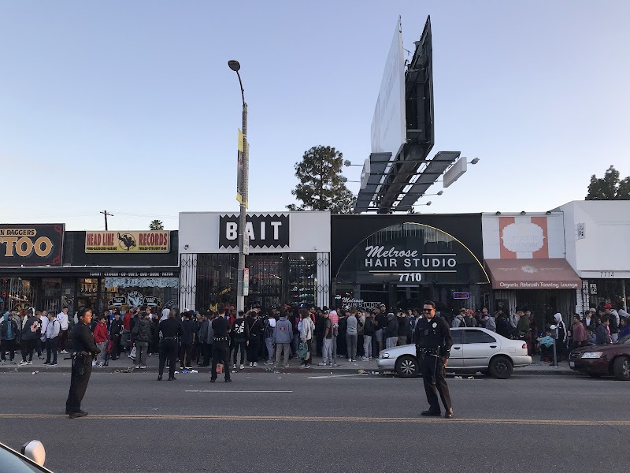
169 BAIT
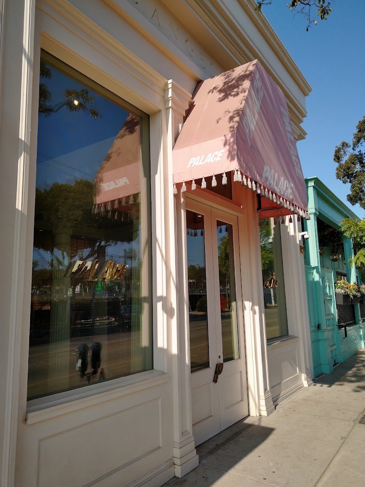
170 Palace
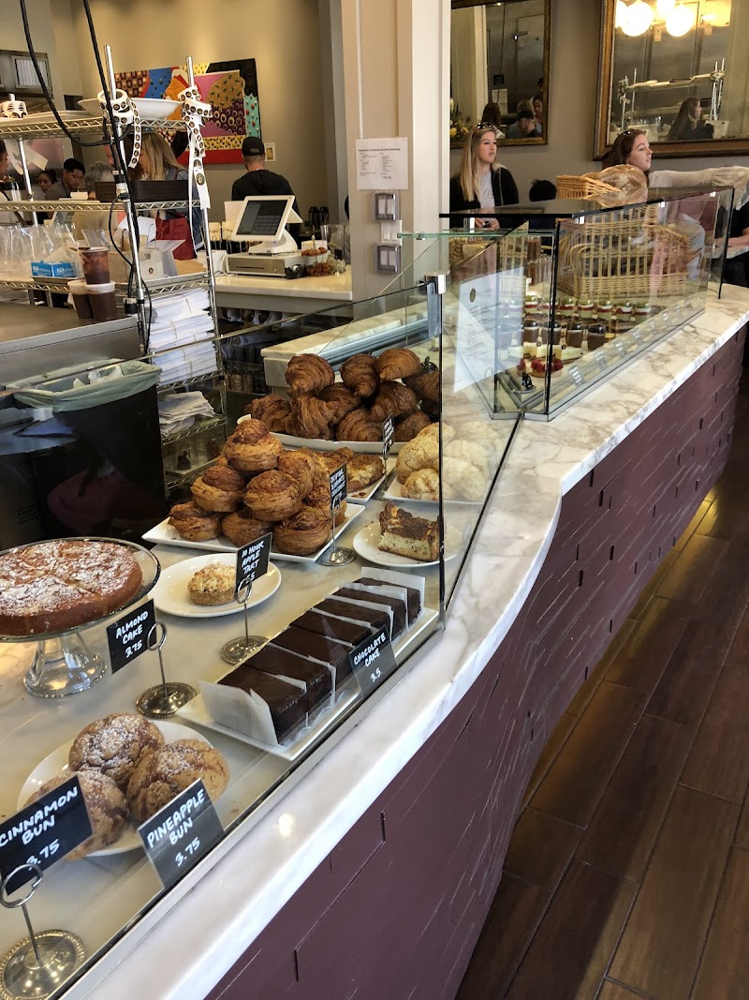
171 b. Patisserie

172 More Yogurt

173 Fleurs et Sel
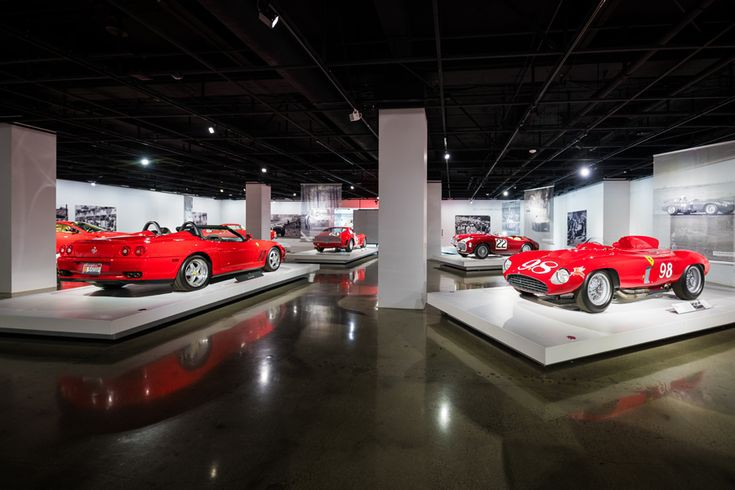
174 Petersen Automot

175 Always Yours Bak
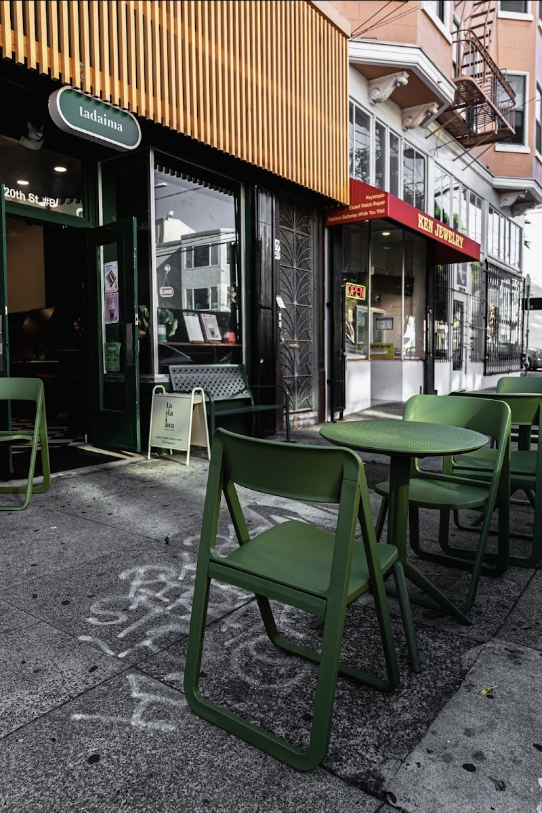
176 Tadaima

177 Harucake
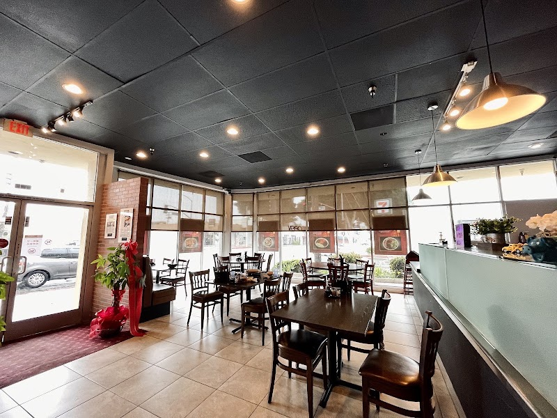
178 Lao Xi Noodle Ho
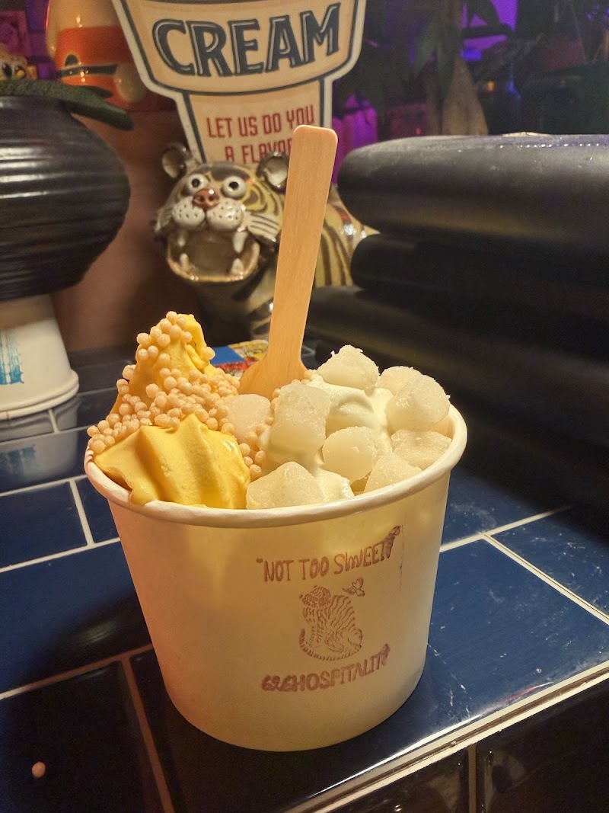
179 626 Hospitality
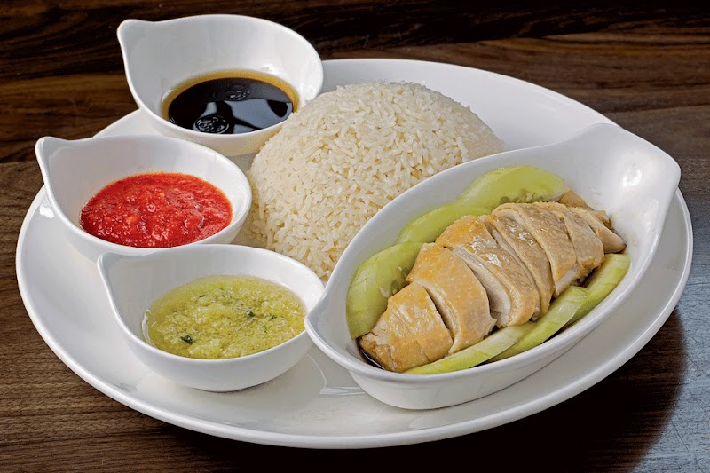
180 Ipoh Kopitiam
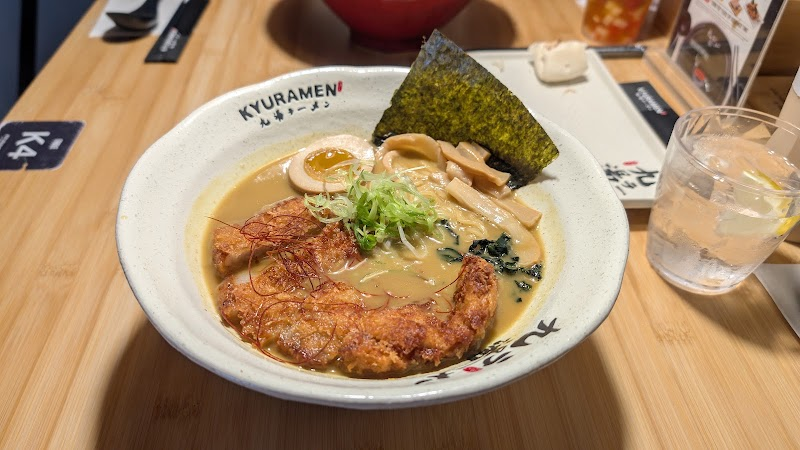
181 Kyuramen x TBaar
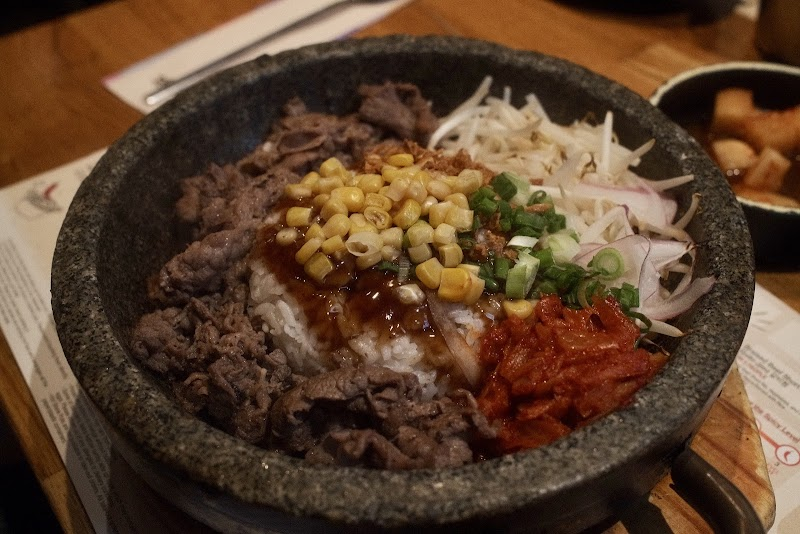
182 Jincook

183 Yi Mei
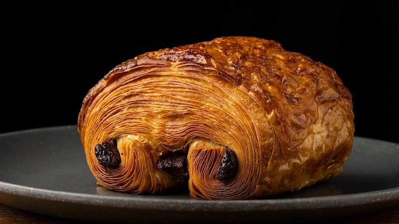
184 Artisanal Goods
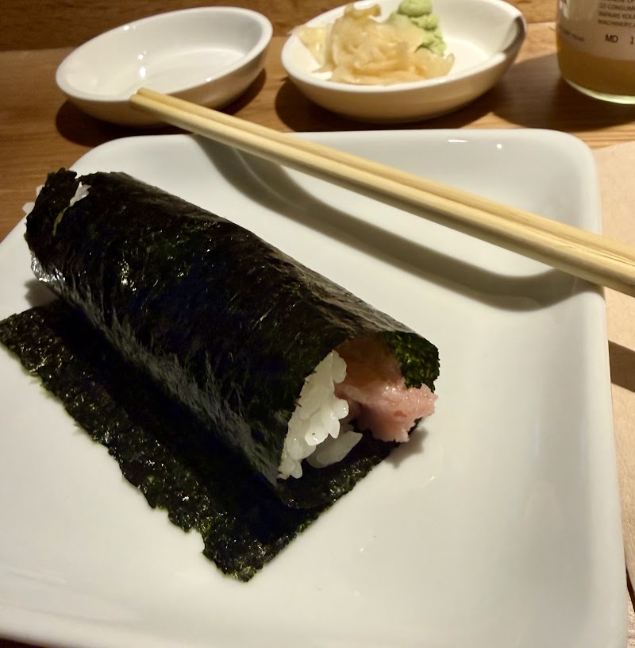
185 KazuNori
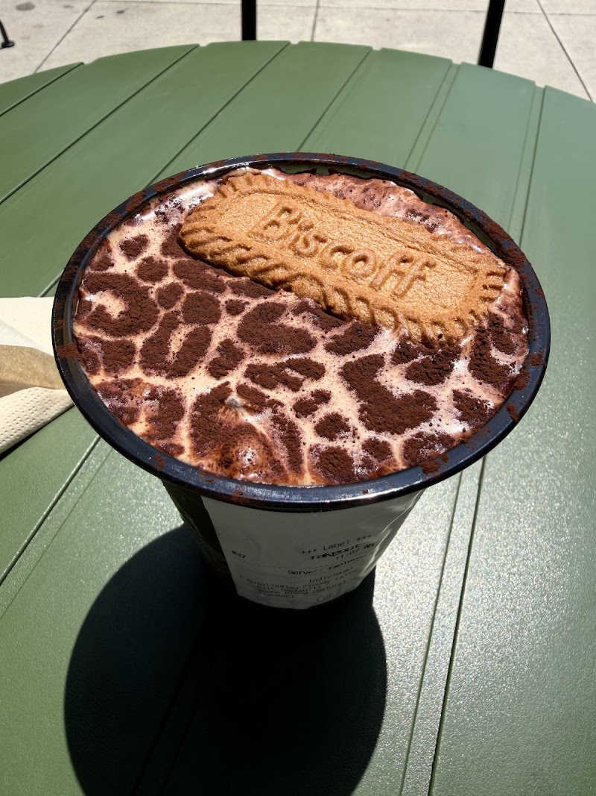
186 Kissa by Motto

187 Neighbors & Frie
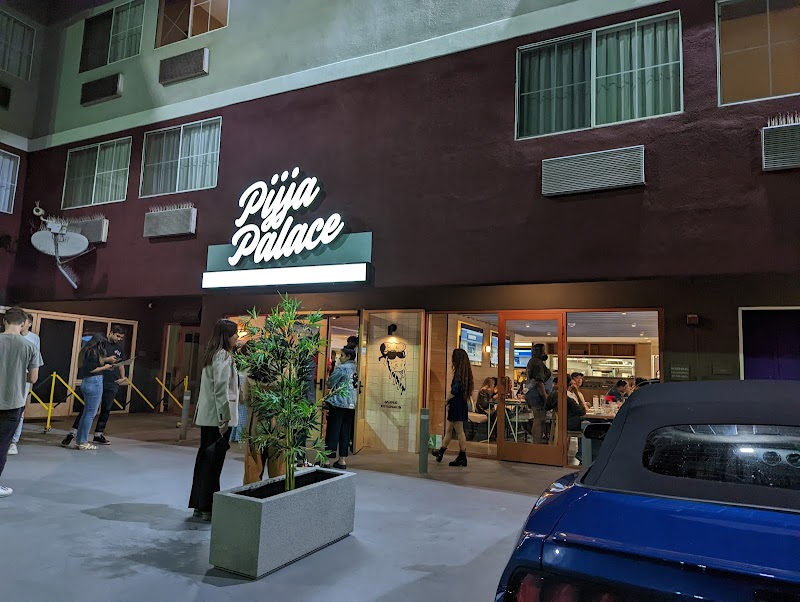
188 Pijja Palace
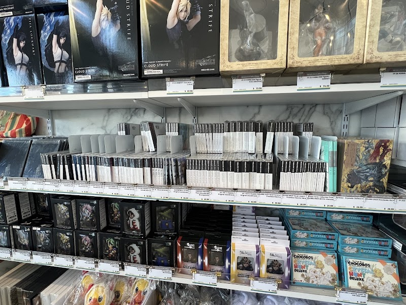
189 Square Enix Cafe